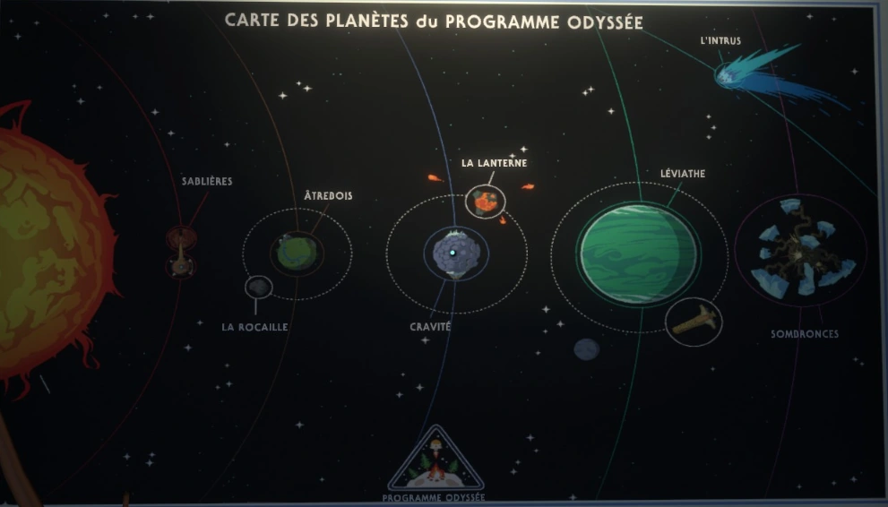

Accueil
But du Site
Ce site cherche à retracer l'histoire de la civilisation des Nomais et ce qui leur est arrivé dans l'univers du jeu Outer Wilds. Avertissement de spoilers !!! Ce site couvre une majeure partie de l'histoire du jeu.
Brève introduction à Outer Wilds
Outer Wilds est un jeu d'exploration et d'énigmes où le joueur incarne un Atrien qui vient de rejoindre le programme spatial Outer Wilds Ventures dans le but d'explorer le système solaire. Ses recherches le mèneront à découvrir les vestiges d'une ancienne civilisation extraterrestre, les Nomais, et à tenter de comprendre ce qui leur est arrivé ainsi que les raisons pour lesquelles il est coincé dans une boucle temporelle.
Acclamé par la critique, ce jeu indépendant, développé par Mobius Digital et publié par Annapurna Interactive, a été nommé pour plusieurs prix et récompenses, notamment :
- Golden Joystick Awards 2019 : meilleur jeu indépendant de l'année
- BAFTA Games Awards 2019 : meilleur jeu de l'année et meilleure conception de jeu (Best Game Design)
- Pégasus Awards 2019 : meilleur jeu indépendant de l'année
Qui sont les Nomais
Pendant son exploration, le joueur découvre la civilisation nomai et les mystères qu'elle dissimule dans ses ruines et ses artéfacts. Son histoire est dispersée sur différentes planètes et peut être reconstituée à partir des vestiges et des textes retrouvés. Puisque le jeu n'impose aucun ordre d'exploration du système solaire, ce site sert à présenter l'histoire des Nomais de manière plus linéaire et concise.
Le système solaire

Pour mieux comprendre les événements présentés dans la ligne du temps et l'histoire des Nomais, il est essentiel de se familiariser avec les six astres principaux du système solaire d'Outer Wilds.
- Les Sablières : deux planètes jumelles en orbite binaire l'une autour de l'autre. Sablière Rouge est une planète rocheuse et désertique que les Nomais ont utilisée pour leurs principales opérations et expériences. Sablière Noire est une planète désertique recouverte de sable, où se trouvent le Projet Sablière Noire ainsi que les tours de téléportation. À la manière d'un sablier, ces deux planètes jumelles sont reliées par une colonne de sable qui permet le transfert de celui-ci entre elles.
- Âtrebois : la planète natale de l'Atrien incarné par le joueur. Semblable à la Terre, elle sert principalement de tutoriel et permet au joueur de se familiariser avec les mécaniques du jeu et le grand mystère qui l'entoure. La Rocaille, une petite lune rocheuse, orbite autour de cette planète et sert de point d'observation.
- Cravité : une planète rocheuse et fragile avec un trou noir en son centre. Une partie des Nomais s'est établie sur cette planète à la suite de l'évacuation de leur vaisseau. La Lanterne, une lune volcanique, orbite autour de cette planète et projette constamment des météorites dans sa direction, rendant sa surface déjà précaire encore plus instable.
- Léviathe : la plus grande planète du système solaire, recouverte d'eau et de cyclones. Bien qu'inhospitalière, cette planète accueille le Lance-sonde orbital, qui a pour but de propulser une sonde à la recherche de l'Œil de l'Univers.
- Sombronces : la planète sur laquelle les Nomais se téléportent accidentellement alors qu'ils recherchent l'Œil de l'Univers. Elle est mystérieuse et remplie de lianes sombres ainsi que de graines interconnectées formant un réseau de portails déroutants, dont les dimensions intérieures défient les lois de la physique.
- L'Intrus : une comète mystérieuse qui orbite autour du Soleil. Elle rejoint le système solaire après l'arrivée des Nomais. Ceux-ci détectent un étrange signal d'énergie en son centre, dont le présage n'annonce rien de bon.